Create a GitHub account here: github.com
Create a GitHub account here: github.com
Once you are logged in, click on the “+” sign at the top and click on “New Organization”
(like the screenshot below)
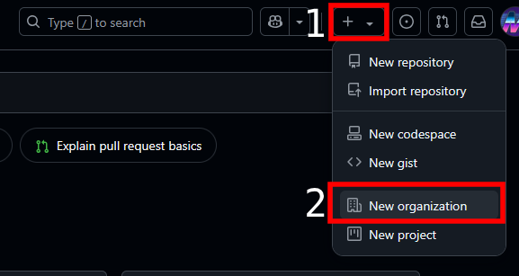
Then choose “Create a free organization”
Create an organization name and enter your email address.
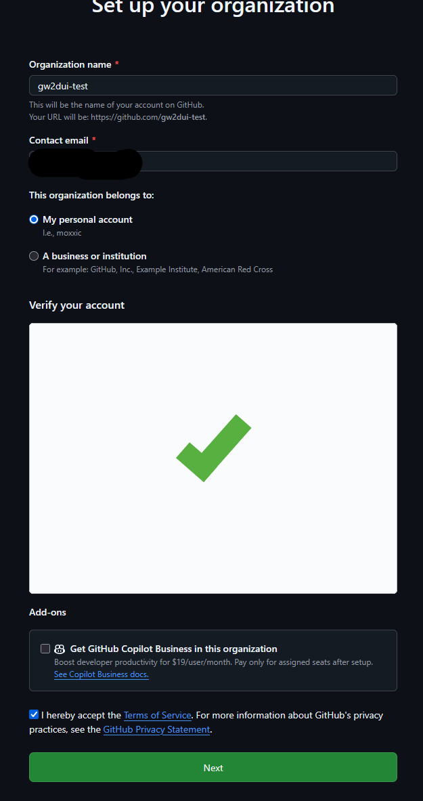
You can skip the next step.
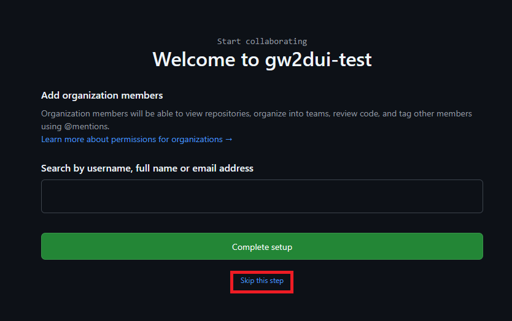
Next, we will create a repository.
On the right side, you should see this:
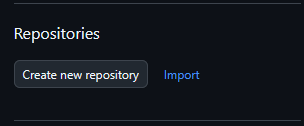
Click on “Create new repository”
On the next screen, make the owner the organization you created and in the repository name, you can make it the org name followed by .github.io
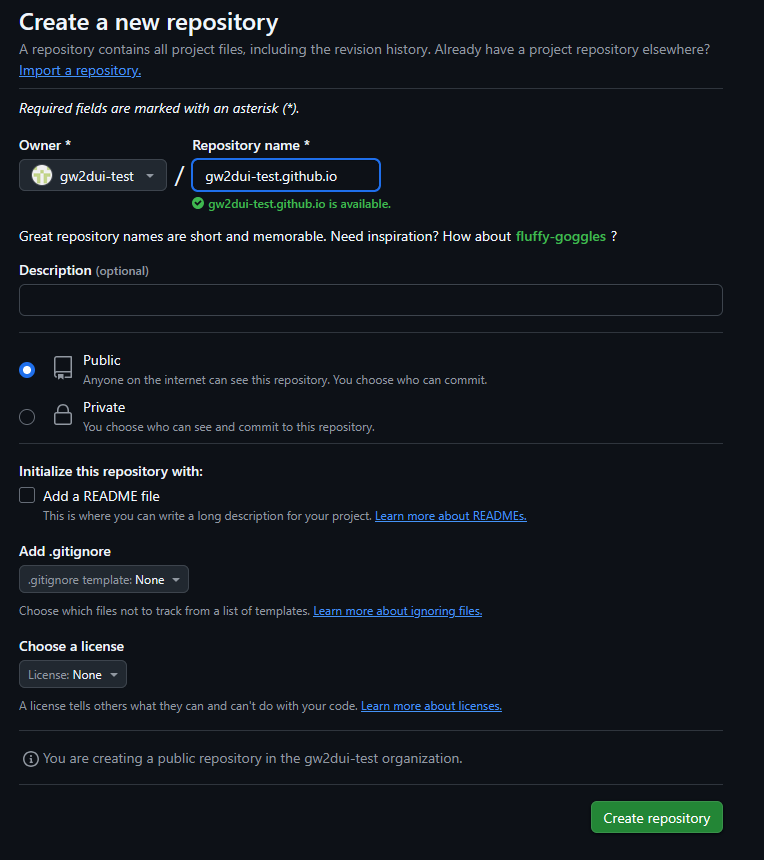
Change it to Public so others can view the agg (if needed). And create the repository. Keep the next page open as we will go back to it.
Next you will need the index.html file, you can download the one here (which is the same as haro’s), open this in a tab or window
https://github.com/moxic-agg/moxic-agg.github.io/blob/main/index.html
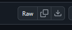
Click on the arrow pointing down and it should download the file. (remember where you saved it)
Go back to the page that opened after you created the repository. On that page, you should see an option that says “uploading an existing file”
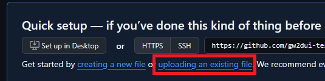
Click on that and then either drag the index.html file you downloaded before into where it says, or click on “choose your files”
After that, click on “Commit changes”.
The next part may take a bit (usually not more than 30 seconds to a minute). To ensure it is done committing, you can click on this:
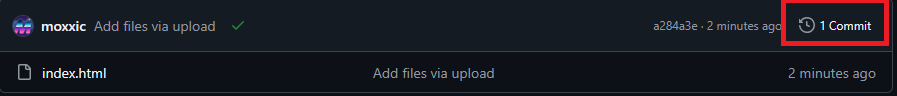
Where it says # Commit, after you click on that, you will see any changes made to that file, like so:
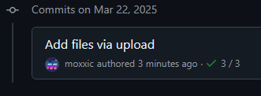
Once you see the check mark, it should be completed and you should be able to browse to the github.io address you, in this case: (open yours in a new tab or window)
Next we need to get a OAUTH token to be able to save.
To do that, back on github. Go to your icon in the top right hand corner:
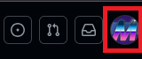
Then go down to settings. On the left hand side towards the bottom click on Developer settings:
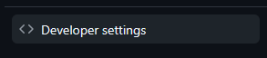
Then click on “Personal access tokens” and then “Tokens (classic)”.
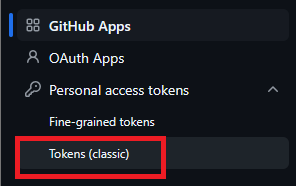
Next click on “Generate new token”, then select the classic one.
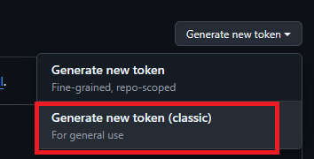
Add a note (if you want), and set the expiration to no expiration. That way you don’t need to keep going back to refresh it and then check repo for the scope:
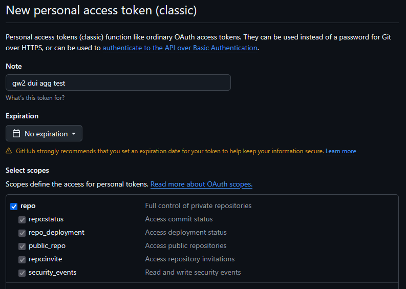
After that, click on “Generate token” at the bottom.
Click on the two boxes there to copy it.
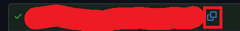
Lets go back to the agg back, that we created (example: https://gw2dui-test.github.io/)
Once we are there, lets check on the gear or cog icon on the right side here:
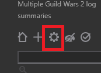
Here is where you need to change a few settings:
Username you want to change to the org, the target repository to your repository
If you are not sure what you put, you can go back to your github and you should see in the top left hand corner, when you are in the repository
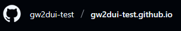
With the token you created, you can paste that into the Password, OAUTH token, or personal access token field.
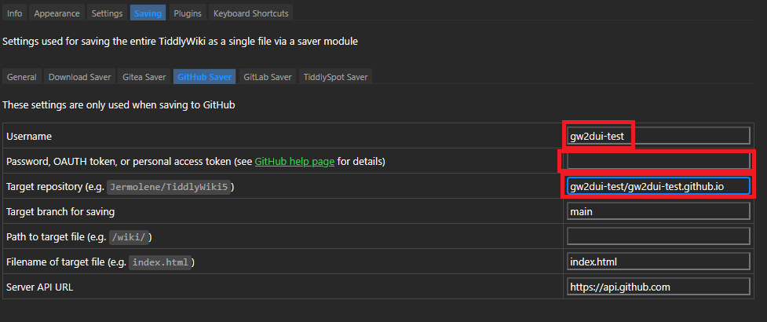
Once that is done, you can click on the save icon (which is the circle in a circle icon) on the right hand side:
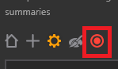
If it worked, it should say it was “saved wiki”. And should change the icon to the following:
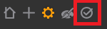